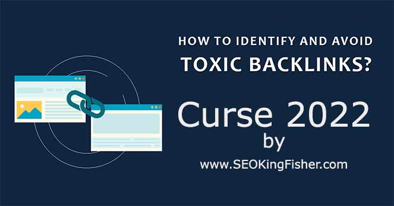

This is the only thing to do to have a good and clean website and in the future, a lot of traffic will depend of that practice.
When people talk to me about removing bad backlinks, I'm always a little curious about how the person might want to do it.
How do you know which backlinks to remove? Many times, they mention the Google guidelines as reference on what
to keep and what to remove.
Unfortunately, this is the mistake of many, as many backlinks that are theoretically considered "black hat" by Google seems not to
be harmfull at all for your PageRank or your site's authority. In fact those backlinks are worth for good and reliables! Google's
policies are designed to keep Google a relevant and quality search engine, but the reality of 430 billion sites competing for the top
results means that it cannot penalize those sites as described. Yet we still see people cutting the "link juice" of certain backlinks which
actually destroys their SERPs and causes them a big loss of rankings. Most of the cases they don't even understaind why.
Now if you really want to perform a professional job and protect yourself from mistakes like this, I highly recommend Semrush. You can read here the 2022 complete class of how to remove toxic backlinks with Semrush or Google Search Console. Founded in 2008, the company benefits from the best user feedbacks: It is the most used and highest quality software for SEO. Their backlinks toxicity algorithm is easily state-of-the-art. By reading my class I also provide a trick that will gives you access to the best SEO tools (Semrush, Majestic, Ahrefs, Moz, OneHourIndexing...) for $15/month. I will see you there!
